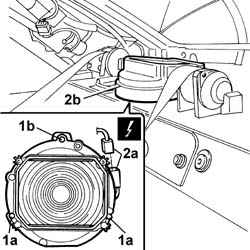
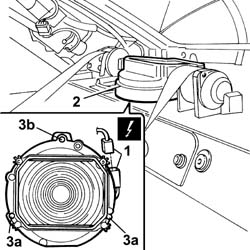

5570T99 REAR SPEAKER (one), left or right - R.R. with rear parcel shelf removed
- Path
- Procedures > 55 ELECTRICAL EQUIPMENT > 5570 ACCESSORIES > 5570T CAR RADIO AND CAR TELEPHONE > 5570T99 REAR SPEAKER (one), left or right - R.R. with rear parcel shelf removed
- Kind
- repair procedure (removal / refitting; the operation number is the code)
- Applies to
- all engines; all production periods
- Interactive page
- https://sloeber94.github.io/elrnDB-lThss/en/#/150135
Applies to: all engines; all production periods
 Removing
Removing
 Refitting
Refitting1. Undo the fixing bolts (1a) and the rear nut (1b).
2. Disconnect the electrical connector (2a) and remove the speaker (2b).
 | Description | Connector |
|---|---|---|
2a | Right rear speaker (in rear parcel shelf) | P031 |

Applies to: all engines; all production periods
Refitting
Removing1. Connect the electrical connector for the rear speaker.
| Description | Connector |
|---|---|---|
1 | Right rear speaker (in rear parcel shelf) | P031 |
2. Place the speaker in the housing.
3. Tighten the front fixing bolts (3a) and the rear nut (3b).
